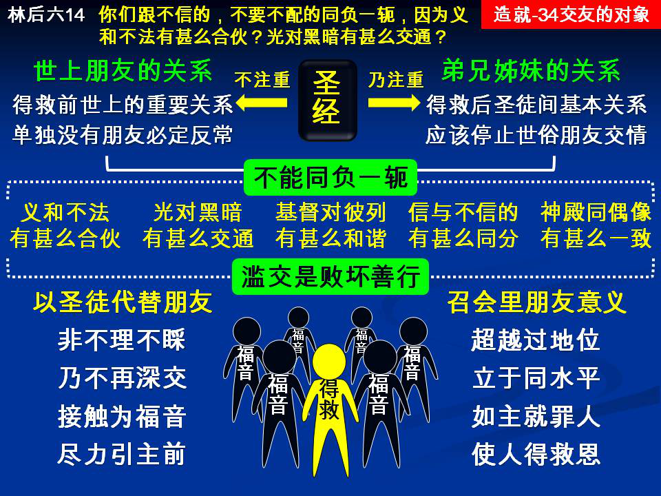

诗歌：409首、133首
重要经文：
诗篇一篇一至二节：不从恶人的计谋，不站罪人的道路，不坐亵慢人的座位；惟喜爱耶和华的律法，昼夜默想，这人便为有福。
哥林多前书十五章三十三节：你们不要受迷惑：滥交败坏善行。
哥林多后书六章十四至十五节：你们跟不信的，不要不配的同负一轭，因为义和不法有什么合伙？光对黑暗有什么交通？基督对彼列有什么和谐？信的同不信的有什么同分？
纲目要点：
壹 圣经不注重朋友的问题。
贰 朋友是世界上最重要的关系。
参 五个不能同负一轭的问题：
一 义和不法有什么合伙。
二 光对黑暗有什么交通。
三 基督对彼列有什么和谐。
四 信的同不信的有什么同分。
五 神的殿同偶像有什么一致。
肆 滥交是败坏善行。
伍 召会里朋友的意义：
一 朋友是超越过地位的。
二 召会里所着重的是弟兄。
信息选读：
圣经不注重朋友的问题
圣经里不是不用朋友这一个辞，圣经里是用过许多次。创世记用过，箴言里亦用过。旧约里有许多次，新约里马太福音，路加福音也多次用过。但是圣经里所说的朋友，大多是指着人在基督之外作朋友说的。说到人在主里面作朋友的并不多。使徒行传里有两次，一次是在亚西亚的首领中，有几个是保罗的朋友，劝保罗不要到戏园里去。 （十九31）一次是犹流宽待保罗，准他往朋友那里去，受他们的照应。（二七2。）还有一次，就是约翰叁书十四节下： 『愿你平安。朋友们都问你安。请你替我按着姓名问朋友们安。』在新约里，除了这三处外，别的地方就没有了。你看见，在圣经里对于朋友的问题不大注意。
今天在我们中间，朋友不是最重要的问题
什么叫作朋友？老年人和少年人可以作朋友，丈夫和妻子可以作朋友，父亲和儿子也可以作朋友。弟兄和弟兄之间可以作朋友，姊妹和姊妹之间也可以作朋友。作朋友乃是能相爱又能相交，不讲别的关系。人的关系有所谓的血亲，是从血统而生的亲属。朋友不一样，乃是因为相爱所以相交。所以，朋友的问题乃是把一切其他的关系都放在一边，因为爱，所以论交。许多时候，在夫妻之间又加上朋友的关系，在父子之间又加上朋友的关系，在母女之间又加上朋友的关系，在师生之间又加上朋友的关系。同等的人，同年的人，同时的人，都能有朋友的关系。当我们没有相信主耶稣之前，当我们没有接受主耶稣作救主之前，每一个人因为没有主里面弟兄的关系，也没有主里面姊妹的关系，所以朋友乃是世界上最重要的一个关系。但是今天在我们中间，朋友不是最重要的问题。
没有信主之先，朋友是一件要紧的事
因为在父子之间有不同的立场，在母女之间有不同的立场，在夫妻之间有不同的立场，在主仆之间有不同的立场，大家各有各的立场。其余亲属的关系不会有许多，也许有三个五个，十个八个就不得了了。除此之外，所有的接触都是在朋友里。
人不能满足于家庭的关系，人不能满足于师生的关系，人不能满足于社会中其他的关系，人需要有朋友的关系才能满足。朋友的关系是根据相爱而论交，而不是根据于血统。你知道，人伦的许多关系是由生而来的，惟有朋友这一个关系是自己挑选来的。所以，朋友就变作是人没有信主之先，最要紧的问题。每个人总是有三个，五个朋友，十个八个朋友。社交强的，也许有几十个，几百个朋友，在那里相熟，相爱，相往。人在没有信主的时候，朋友的确是有重要的地位。在不信的人中间，一个人如果一个朋友也没有，他定规不是很好的人。他的性情定规是反常的、病态的，所以作到一个地步，一个朋友都没有。或者因为他的品格不可靠，所以没有朋友。或者因为他的性情古怪，所以没有朋友。以普通来说，人定规有朋友。
与世人同负一轭乃是痛苦
有一个年轻的女子来见司布真，告诉他说，她要和一个不信的青年人作朋友。她说，我要拖他信主，并且不久我要和他订婚。司布真就叫那一个年轻的女子爬上一张很高的桌子。她没办法，只得爬上去。那时，司布真年纪已经相当大。他就说，你拉我的手，尽力量把我拉上去。那一个女子就拉他，但拉不上去。司布真说，我现在把你拉下来；他一拉，就把她拉下来了。他就说，拉下来容易，拉上去不容易。这一位姊妹的问题就解决了。你们要把不信的对方拉上来，这是难而又难的事。
五个不能同负一轭的问题
一 『义和不法有什么合伙？』你们今天已经信主，知道什么叫作义。你们要把从前不义的事对付掉，要把从前亏负的事对付掉。
二 『光对黑暗有什么交通？』你是蒙了光照，看见的人。他是黑暗，看不见的人。一个神的儿女，路走得远，路走得深的人，就是碰着一个属肉体的基督徒，活在黑暗里，都觉得难以和他相通。
三 『基督对彼列有什么和谐？』彼列是指着撒但说的。我们是属乎主的人，他们是属乎彼列的人，我们是贵重的，他们是便宜的。
四 『信的同不信的有什么同分？』在信心里面，你认识神，他不信，他不认识神。在你的生活里，你能信。你是仰望神，他是仰望自己。
五 『神的殿同偶像有什么一致？』有一班人，他们的身体是神的殿，我不能污秽神的殿。你们和朋友一同出去，有许多时候所作的事，是要摸着你们的身体。就像人喝酒，人抽烟，都是用他们的身体，都要摸着他们的身体。但是你们的身体是神的殿，你们不能毁坏这一个殿，你们不能污秽这一个殿。
召会里朋友的意义
朋友乃是一种关系，是不讲形式的。有一种的交通，是超越过地位的，那一个叫作朋友。亚伯拉罕忘记了他自己的地位，神也把祂自己的地位摆在一边，亚伯拉罕就能和神作朋友。主耶稣也能够和罪人作朋友。如果主耶稣是正经的站在祂的地位上，就不能和罪人作朋友。祂是离开了那一个地位，才能作朋友。不然的话，只作救主，不作朋友。我愿意你们看见，什么叫作朋友。罪人和主是不能相合的。祂是审判者，我们是被审判者；祂是救主，我们是蒙恩得救的人。但是主把一切的地位都摆在一边，来作罪人的朋友。所以，主能够带领他们，叫他们接受祂作救主。
召会里所着重的是在主里面弟兄姊妹的关系
这是顶希奇的事，就是在召会里什么东西都注重，却不注重朋友。因为那是超越过地位，超越过正经，是站在另外的地位上，是一个大人在那里高抬某某人作他的朋友。他到了有一天，大到一个地步，可以把某一个人提起来说，你是我的朋友。这不是普通的弟兄姊妹作的。年轻的人，才信主的人，总是要学习维持在主里面弟兄姊妹的关系。 （摘自初信造就第三十四篇）
课程复习：
一 为何今天在我们中间，朋友不是最重要的问题？
二 为什么没有相信主前，朋友是一件要紧的事？
三 请说明五个不能同负一轭的问题？
四 在召会里朋友的意义为何？
五 为什么在召会里所着重的是在主里面弟兄姊妹的关系？
辅助图表：
